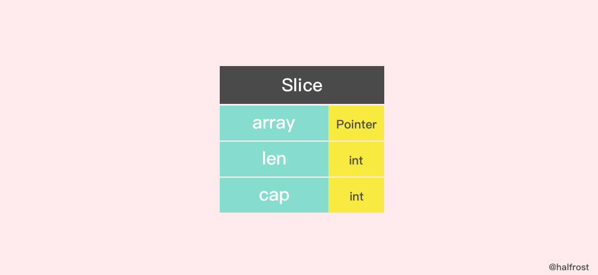
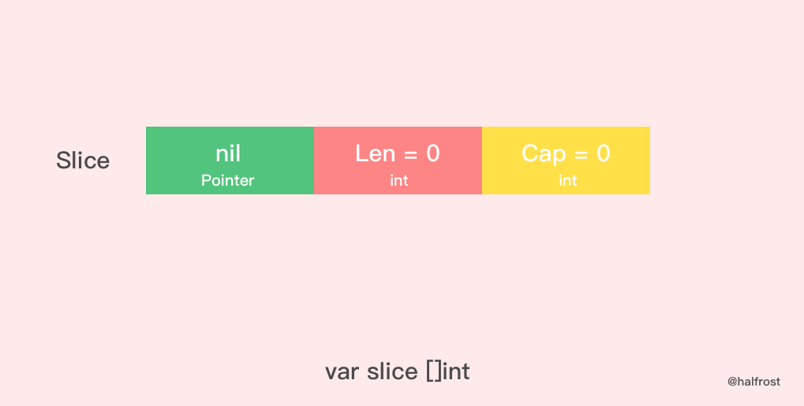
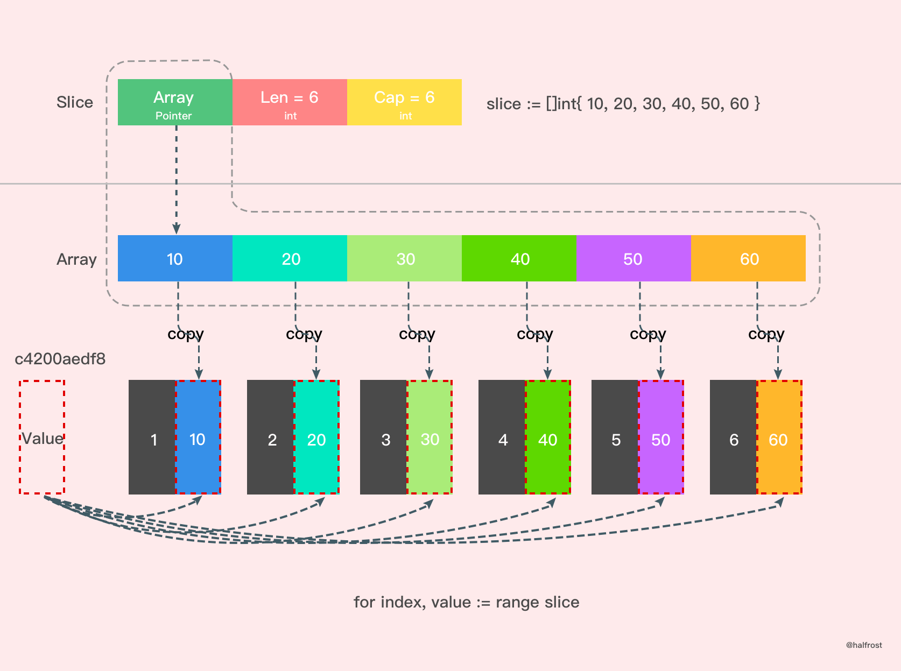

数据结构 切片本身并不是动态数组或者数组指针。切片本身是一个只读对象，其工作机制类似数组指针的一种封装 。
切片是对数组一个连续片段的引用，所以切片是一个引用类型。
给定项的切片索引可能比相关数组的相同元素的索引小。
Slice 的数据结构定义如下:
1 2 3 4 5 type slice struct { array unsafe.Pointer len int cap int }

创建 空切片和nil切片 
扩容 当一个切片的容量满了，就需要扩容了。怎么扩，策略是什么？
1 2 3 4 5 6 7 8 9 10 11 12 13 14 15 16 17 18 19 20 21 22 23 24 25 26 27 28 29 30 31 32 33 34 35 36 37 38 39 40 41 42 43 44 45 46 47 48 49 50 51 52 53 54 55 56 57 58 59 60 61 62 63 64 65 66 67 68 69 70 71 72 73 74 75 76 77 78 79 80 81 82 83 84 85 86 87 88 89 90 91 92 func growslice (et *_type, old slice, cap int ) slice if raceenabled { callerpc := getcallerpc(unsafe.Pointer(&et)) racereadrangepc(old.array, uintptr (old.len *int (et.size)), callerpc, funcPC(growslice)) } if msanenabled { msanread(old.array, uintptr (old.len *int (et.size))) } if et.size == 0 { if cap < old.cap { panic (errorString("growslice: cap out of range" )) } return slice{unsafe.Pointer(&zerobase), old.len , cap } } newcap := old.cap doublecap := newcap + newcap if cap > doublecap { newcap = cap } else { if old.len < 1024 { newcap = doublecap } else { for 0 < newcap && newcap < cap { newcap += newcap / 4 } if newcap <= 0 { newcap = cap } } } var lenmem, newlenmem, capmem uintptr const ptrSize = unsafe.Sizeof((*byte )(nil )) switch et.size { case 1 : lenmem = uintptr (old.len ) newlenmem = uintptr (cap ) capmem = roundupsize(uintptr (newcap)) newcap = int (capmem) case ptrSize: lenmem = uintptr (old.len ) * ptrSize newlenmem = uintptr (cap ) * ptrSize capmem = roundupsize(uintptr (newcap) * ptrSize) newcap = int (capmem / ptrSize) default : lenmem = uintptr (old.len ) * et.size newlenmem = uintptr (cap ) * et.size capmem = roundupsize(uintptr (newcap) * et.size) newcap = int (capmem / et.size) } if cap < old.cap || uintptr (newcap) > maxSliceCap(et.size) { panic (errorString("growslice: cap out of range" )) } var p unsafe.Pointer if et.kind&kindNoPointers != 0 { p = mallocgc(capmem, nil , false ) memmove(p, old.array, lenmem) memclrNoHeapPointers(add(p, newlenmem), capmem-newlenmem) } else { p = mallocgc(capmem, et, true ) if !writeBarrier.enabled { memmove(p, old.array, lenmem) } else { for i := uintptr (0 ); i < lenmem; i += et.size { typedmemmove(et, add(p, i), add(old.array, i)) } } } return slice{p, old.len , newcap} }
上述就是扩容的实现。主要需要关注的有两点，一个是扩容时候的策略，还有一个就是扩容是生成全新的内存地址还是在原来的地址后追加。
扩容策略 Go 中切片扩容的策略是这样的：
首先判断，如果新申请容量（cap）大于2倍的旧容量（old.cap），最终容量（newcap）就是新申请的容量（cap）
否则判断，如果旧切片的长度小于1024，则最终容量(newcap)就是旧容量(old.cap)的两倍，即（newcap=doublecap）
否则判断，如果旧切片长度大于等于1024，则最终容量（newcap）从旧容量（old.cap）开始循环增加原来的 1/4，即（newcap=old.cap,for {newcap += newcap/4}）直到最终容量（newcap）大于等于新申请的容量(cap)，即（newcap >= cap）
如果最终容量（cap）计算值溢出，则最终容量（cap）就是新申请容量（cap）
扩容之后的数组是新数组还是老数组 情况一
1 2 3 4 5 6 7 8 9 10 11 func main () array := [4 ]int {10 , 20 , 30 , 40 } slice := array[0 :2 ] newSlice := append (slice, 50 ) fmt.Printf("Before slice = %v, Pointer = %p, len = %d, cap = %d\n" , slice, &slice, len (slice), cap (slice)) fmt.Printf("Before newSlice = %v, Pointer = %p, len = %d, cap = %d\n" , newSlice, &newSlice, len (newSlice), cap (newSlice)) newSlice[1 ] += 10 fmt.Printf("After slice = %v, Pointer = %p, len = %d, cap = %d\n" , slice, &slice, len (slice), cap (slice)) fmt.Printf("After newSlice = %v, Pointer = %p, len = %d, cap = %d\n" , newSlice, &newSlice, len (newSlice), cap (newSlice)) fmt.Printf("After array = %v\n" , array) }
output:
1 2 3 4 5 Before slice = [10 20], Pointer = 0xc4200c0040, len = 2, cap = 4 Before newSlice = [10 20 50], Pointer = 0xc4200c0060, len = 3, cap = 4 After slice = [10 30], Pointer = 0xc4200c0040, len = 2, cap = 4 After newSlice = [10 30 50], Pointer = 0xc4200c0060, len = 3, cap = 4 After array = [10 30 50 40]
把上述过程用图表示出来，如下图。
情况二
拷贝 Slice 中拷贝方法有2个
1 2 3 4 5 6 7 8 9 10 11 12 13 14 15 16 17 18 19 20 21 22 23 24 25 26 27 28 29 30 31 32 33 34 35 36 37 38 func slicecopy (to, fm slice, width uintptr ) int if fm.len == 0 || to.len == 0 { return 0 } n := fm.len if to.len < n { n = to.len } if width == 0 { return n } if raceenabled { callerpc := getcallerpc(unsafe.Pointer(&to)) pc := funcPC(slicecopy) racewriterangepc(to.array, uintptr (n*int (width)), callerpc, pc) racereadrangepc(fm.array, uintptr (n*int (width)), callerpc, pc) } if msanenabled { msanwrite(to.array, uintptr (n*int (width))) msanread(fm.array, uintptr (n*int (width))) } size := uintptr (n) * width if size == 1 { *(*byte )(to.array) = *(*byte )(fm.array) } else { memmove(to.array, fm.array, size) } return n }
在这个方法中，slicecopy 方法会把源切片值(即 fm Slice )中的元素复制到目标切片(即 to Slice )中，并返回被复制的元素个数，copy 的两个类型必须一致。slicecopy 方法最终的复制结果取决于较短的那个切片，当较短的切片复制完成，整个复制过程就全部完成了。
举个例子，比如：
1 2 3 4 5 6 func main () array := []int {10 , 20 , 30 , 40 } slice := make ([]int , 6 ) n := copy (slice, array) fmt.Println(n,slice) }
还有一个拷贝的方法，这个方法原理和 slicecopy 方法类似，不在赘述了，注释写在代码里面了。
1 2 3 4 5 6 7 8 9 10 11 12 13 14 15 16 17 18 19 20 21 22 23 24 func slicestringcopy (to []byte , fm string ) int if len (fm) == 0 || len (to) == 0 { return 0 } n := len (fm) if len (to) < n { n = len (to) } if raceenabled { callerpc := getcallerpc(unsafe.Pointer(&to)) pc := funcPC(slicestringcopy) racewriterangepc(unsafe.Pointer(&to[0 ]), uintptr (n), callerpc, pc) } if msanenabled { msanwrite(unsafe.Pointer(&to[0 ]), uintptr (n)) } memmove(unsafe.Pointer(&to[0 ]), stringStructOf(&fm).str, uintptr (n)) return n }
再举个例子，比如：
1 2 3 4 5 func main () slice := make ([]byte , 3 ) n := copy (slice, "abcdef" ) fmt.Println(n,slice) }
说到拷贝，切片中有一个需要注意的问题。
1 2 3 4 5 6 func main () slice := []int {10 , 20 , 30 , 40 } for index, value := range slice { fmt.Printf("value = %d , value-addr = %x , slice-addr = %x\n" , value, &value, &slice[index]) } }
output:
1 2 3 4 value = 10 , value-addr = c4200aedf8 , slice-addr = c4200b0320 value = 20 , value-addr = c4200aedf8 , slice-addr = c4200b0328 value = 30 , value-addr = c4200aedf8 , slice-addr = c4200b0330 value = 40 , value-addr = c4200aedf8 , slice-addr = c4200b0338
从上面结果我们可以看到，如果用 range 的方式去遍历一个切片，拿到的 Value 其实是切片里面的值拷贝。

原文地址: 深入解析 Go 中 Slice 底层实现